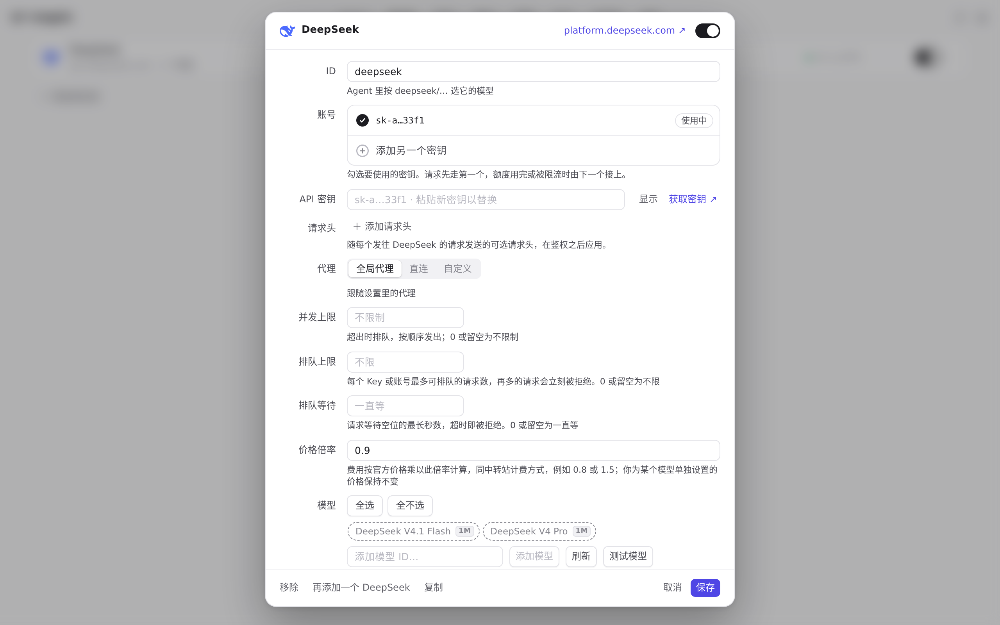
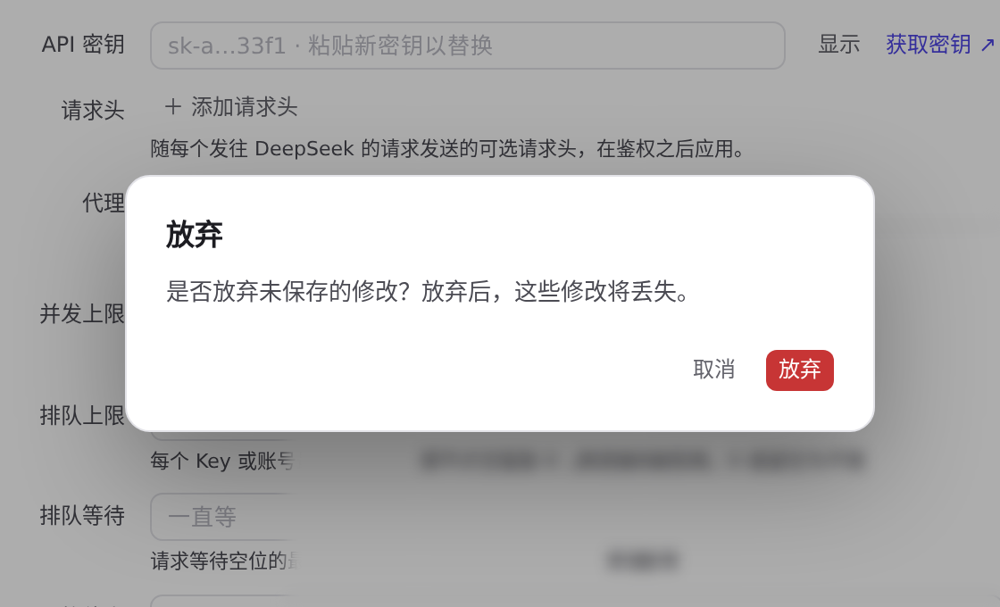
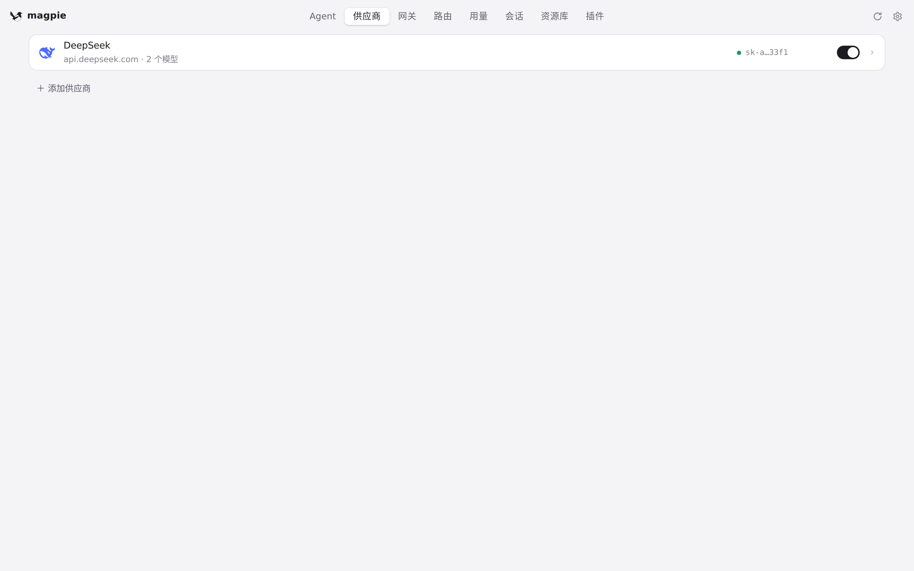
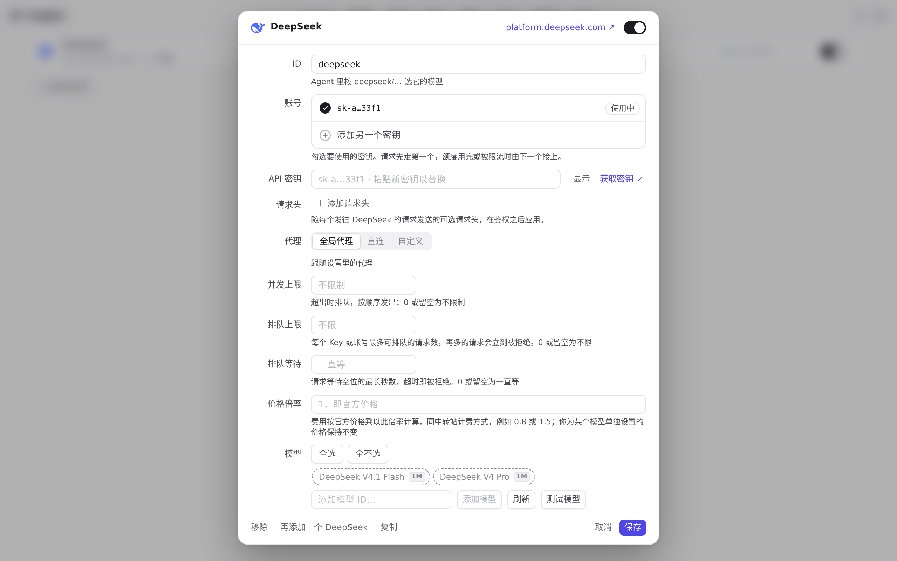
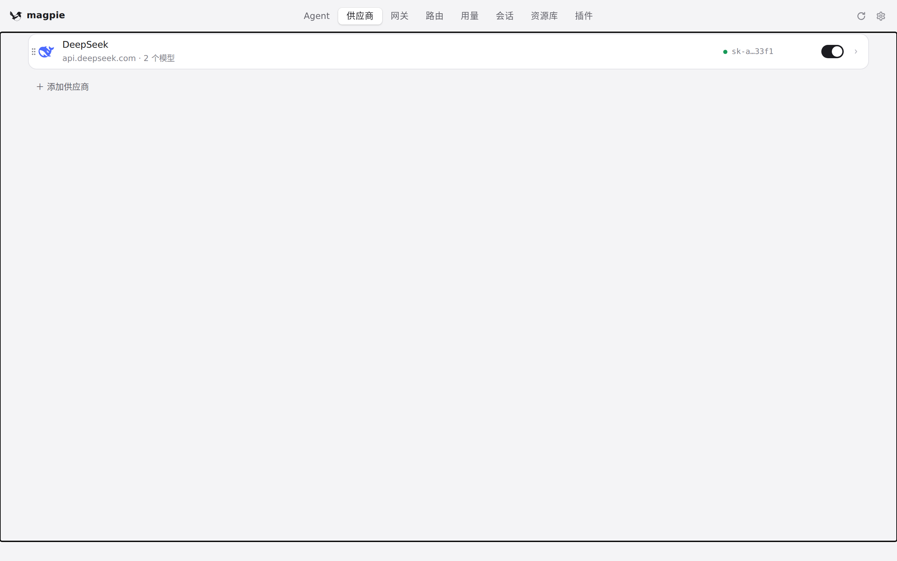
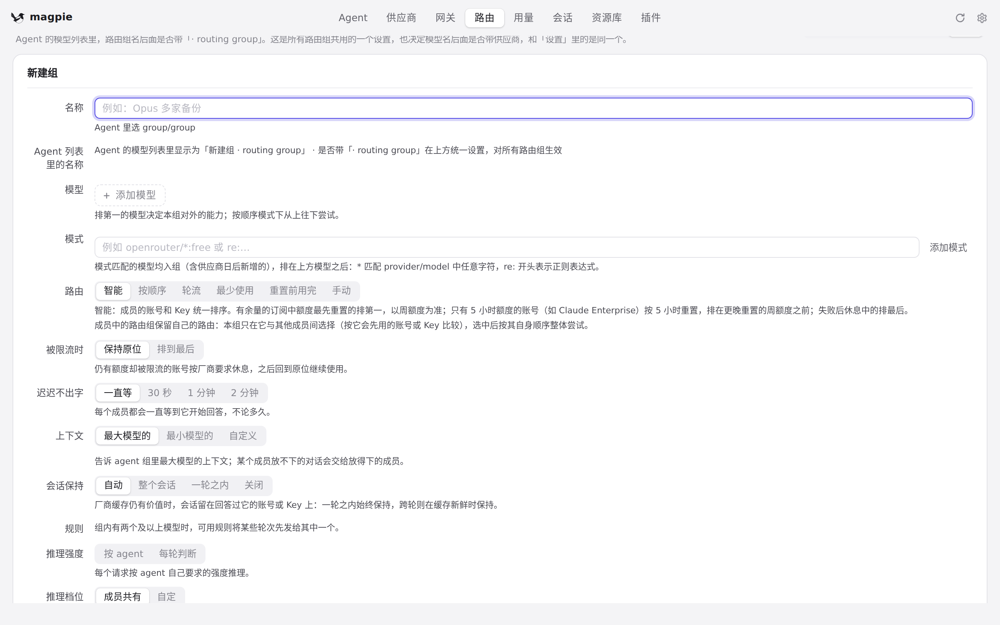
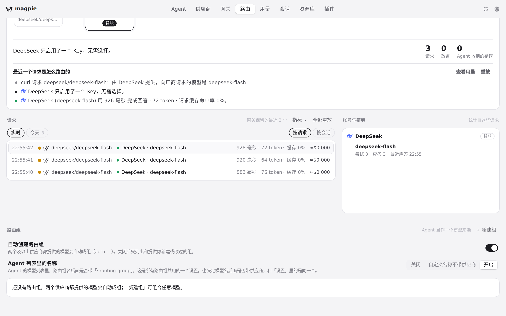
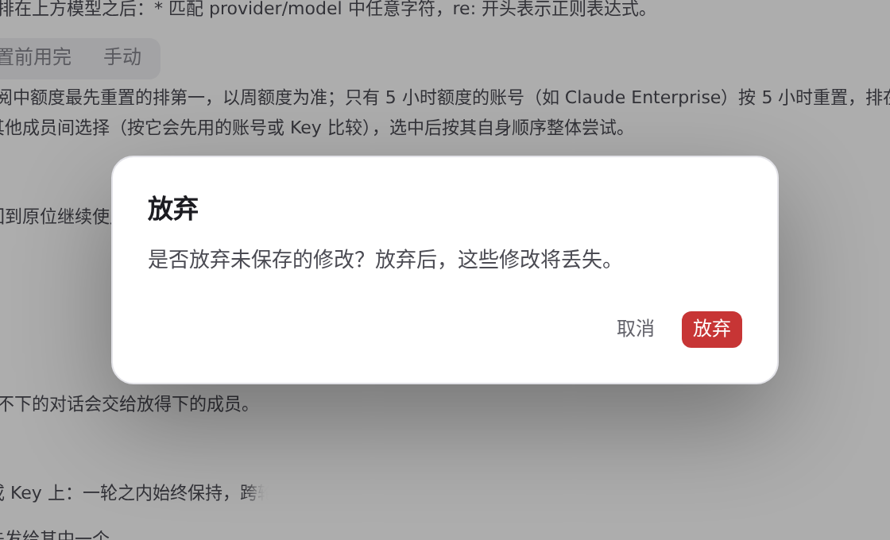
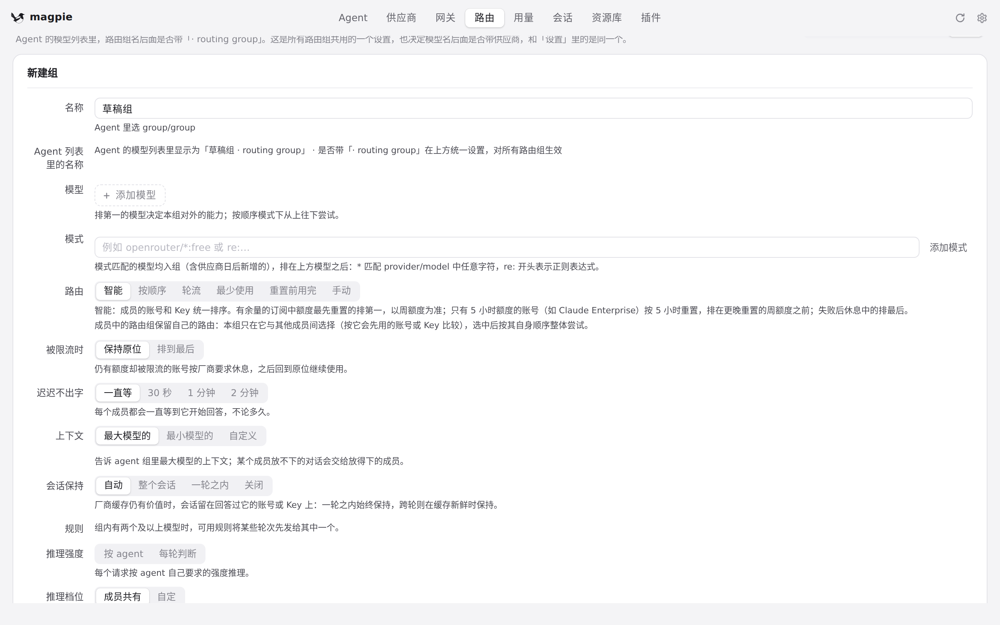

#820 界面预览
commit 8a56d35 · 回到 PR · 这次改动给「放弃未保存的修改」和几处立即生效的删除加了一个应用内置样式的确认对话框（dialog.action-confirm），并把供应商/路由/资源库编辑器、账户与密钥移除接上它；同时给编辑器补上对话框语义、焦点循环、标签关联、导航的 aria-current 与开关的 aria-pressed，并把窗口模式/平台类与主题、字号提前到首帧之前应用。
红线是鼠标走过的轨迹，红色圆环是一次点击；底部文字是这一步在做什么。空格暂停，← → 逐段查看。
 供应商：放弃未保存修改与移除确认 · 供应商编辑器，此时还没改过任何东西
供应商：放弃未保存修改与移除确认 · 供应商编辑器，此时还没改过任何东西
 供应商：放弃未保存修改与移除确认 · 「取消」后出现的放弃修改确认框
供应商：放弃未保存修改与移除确认 · 「取消」后出现的放弃修改确认框

供应商：放弃未保存修改与移除确认 · 编辑器没关闭，改过的价格倍率还在

供应商：放弃未保存修改与移除确认 · 再次出现的放弃修改确认框

供应商：放弃未保存修改与移除确认 · 点「放弃」之后的供应商页

供应商：放弃未保存修改与移除确认 · 重新打开的 DeepSeek 编辑器

供应商：放弃未保存修改与移除确认 · 按 Esc 之后的供应商页

路由：新建组草稿的保护 · 还没改动过的路由组编辑器

路由：新建组草稿的保护 · 没有改动的编辑器关掉之后的路由组列表

路由：新建组草稿的保护 · 有未保存草稿时点「取消」出现的确认框

路由：新建组草稿的保护 · 确认框取消后，编辑器与刚输入的草稿